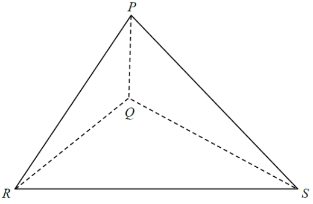

三角學 · 立體圖形中的餘弦定理

$PQ\perp$ 平面 $QRS$，所以 $PQ\perp QR$、$PQ\perp QS$，得
$$\angle PQR=\angle PQS=90^{\circ}$$
在 $\triangle PQR$（直角在 $Q$）中，$\angle PRQ=47^{\circ}$ 的鄰邊是 $PQ$、斜邊是 $PR$：
$$\frac{PQ}{PR}=\cos 47^{\circ}\ \Longrightarrow\ PR=\frac{PQ}{\cos 47^{\circ}}$$
同理，在 $\triangle PQS$ 中 $\angle PSQ=53^{\circ}$：
$$\frac{PQ}{PS}=\cos 53^{\circ}\ \Longrightarrow\ PS=\frac{PQ}{\cos 53^{\circ}}$$
另外兩條底邊用正弦比表示：$\dfrac{QR}{PR}=\sin 47^{\circ}$、$\dfrac{QS}{PS}=\sin 53^{\circ}$。
設 $\theta=\angle RPS$，則
$$RS^{2}=PR^{2}+PS^{2}-2(PR)(PS)\cos\theta\tag{1}$$
兩邊除以 $PR\cdot PS$ 並整理：
$$\cos\theta=\frac{PR}{PS}+\frac{PS}{PR}-\frac{RS^{2}}{PR\cdot PS}$$
底面 $\triangle QRS$ 中 $\angle RQS=120^{\circ}$：
$$RS^{2}=QR^{2}+QS^{2}-2(QR)(QS)\cos 120^{\circ}$$
整條除以 $PR\cdot PS$，並代入 $\dfrac{QR}{PR}=\sin 47^{\circ}$、$\dfrac{QS}{PS}=\sin 53^{\circ}$：
$$\frac{RS^{2}}{PR\cdot PS}=\frac{QR}{PR}\cdot\frac{QR}{PS}+\frac{QS}{PR}\cdot\frac{QS}{PS}-2\cdot\frac{QR}{PR}\cdot\frac{QS}{PS}\cos 120^{\circ}$$
由第 2 步，$\dfrac{PR}{PS}=\dfrac{\cos 53^{\circ}}{\cos 47^{\circ}}$、$\dfrac{PS}{PR}=\dfrac{\cos 47^{\circ}}{\cos 53^{\circ}}$，而 $\dfrac{QR}{PS}=\sin 47^{\circ}\cdot\dfrac{PR}{PS}$、$\dfrac{QS}{PR}=\sin 53^{\circ}\cdot\dfrac{PS}{PR}$。整理後得
$$\cos\theta=\cos\angle PRQ\cos\angle PSQ\cos\angle RQS+\sin\angle PRQ\sin\angle PSQ$$
未知的 $PQ$ 在整個過程中完全對消，所以答案與四面體的高矮無關。
$$\cos\theta=\cos 47^{\circ}\cos 53^{\circ}\cos 120^{\circ}+\sin 47^{\circ}\sin 53^{\circ}$$
$$\approx(0.681998)(0.601815)(-0.5)+(0.731354)(0.798636)$$
$$\approx-0.205208+0.584093=0.378885$$
$$\theta=\cos^{-1}(0.378885)\approx 67.7365^{\circ}$$
準確至最接近的度，$\angle RPS\approx 68^{\circ}$，即選項 C。
易錯：$\angle RQS=120^{\circ}$ 是鈍角，$\cos 120^{\circ}=-0.5$ 必須帶負號；漏了負號會得 $\cos\theta\approx 0.79$，誤答 $38^{\circ}$ 一類的數值。另外 $47^{\circ}$、$53^{\circ}$ 是豎面內的角，不可直接與 $120^{\circ}$ 相加減。